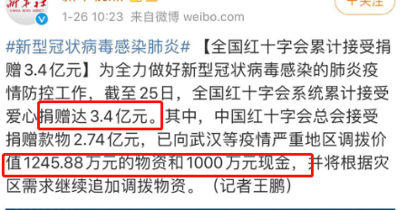
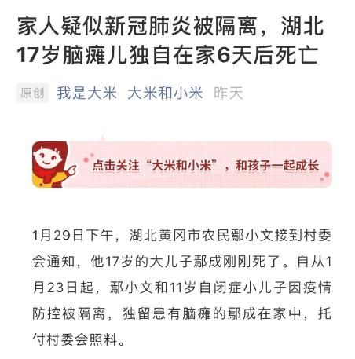
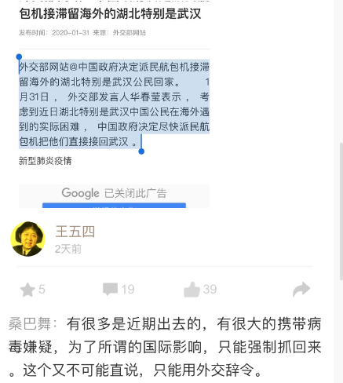
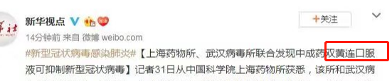
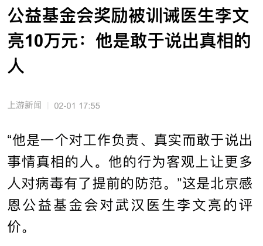
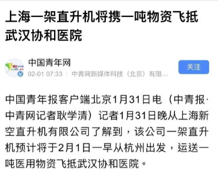

Covid-19: A Squint on Wuhan Virus
前言
民间纪事
1. 序言
2. Timeline
3. 这是一份重要的民间纪事(1)
4. 这是一份重要的民间纪事(2)
5. 这是一份重要的民间纪事(3)
5.1. 1.25
5.2. 1.26
5.3. 1.27
5.4. 1.28
5.5. 1.29
5.6. 1.30
5.7. 1.31
5.8. 2.1
6. 这是一份重要的民间纪事(4)
7. 这是一份重要的民间纪事(5)
次生灾难与思考
1. 序言
2. 发哨子的人
3. 援鄂医生揭露真相：别叫我英雄，受之有愧！
网络暴力
1. 序言
2. 北岛关闭评论、白睿文微博沦陷：语言暴力作恶者的“打砸抢”
3. 給方方上一课
4. 日记一则
言论管控
1. 北京3名90后疫情志愿者因在Github分享被禁的冠状病毒资料被拘
2. 剥光衣服坚持当皇帝的小丑
反思之叹
1. 现在我们在同一条船上——它正是钻石公主号
国外风声
1. Coronavirus coverup is ‘China’s Chernobyl moment,’ warn 100 politicians, experts
2. The World After Coronavirus
关于本项目
About this repository
Covid-19: A Squint on Wuhan Virus
Docs
»
5.
这是一份重要的民间纪事(3)
View page source
5.
这是一份重要的民间纪事(3)
¶
5.1.
1.25
¶
5.2.
1.26
¶

5.3.
1.27
¶
5.4.
1.28
¶
5.5.
1.29
¶

5.6.
1.30
¶
5.7.
1.31
¶


5.8.
2.1
¶

